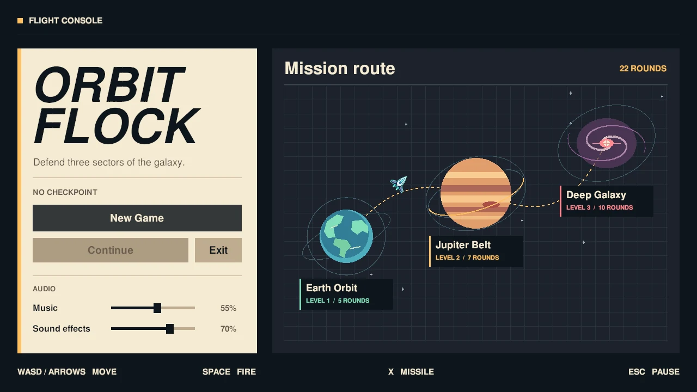

Flight controls
- Move
- WASD or arrows
- Laser
- Space
- Missile
- X
- Pause
- Esc
Run the game
On Windows, open the installer. On Linux, extract the archive and run the executable inside the extracted folder.
./OrbitFlock-Linux-x64/OrbitFlock.x86_64
On Windows, open the installer. On Linux, extract the archive and run the executable inside the extracted folder.
./OrbitFlock-Linux-x64/OrbitFlock.x86_64